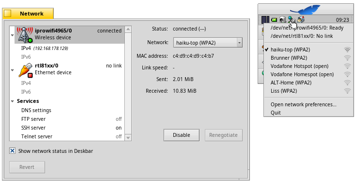

English
EnglishWireless connection
You can connect to your WLAN router either by right-clicking the NetworkStatus icon in Deskbar's tray,
or by selecting your network from the Network preferences.
When the connection is established, you'll be asked for the network's encryption and password.

<<< Previous |
Next >>> |